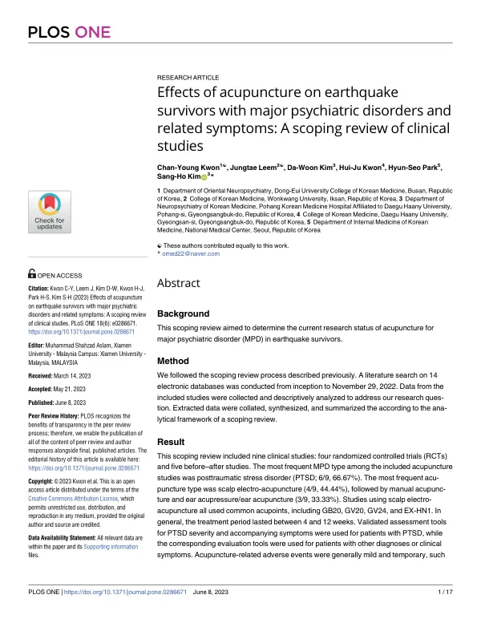

Effects of acupuncture on earthquake survivors with major psychiatric disorders and related symptoms: A scoping review of clinical studies
Kwon CY, Leem J, Kim DW, Kwon HJ, Park HS, Kim SH
PLOS ONE 18(6):e0286671

첫 장 · 오픈액세스First page · open access
논문 소개Summary
지진은 자연재해 가운데 파괴력이 가장 큽니다. 몸의 손상만 남기는 것이 아니라 살아남은 사람에게 외상후스트레스장애, 주요우울장애, 불안장애 같은 정신질환을 남깁니다. 약물치료가 표준이지만 이상반응과 낮은 순응도라는 한계가 있어 침이 대안으로 검토돼 왔습니다. 그런데 지진 생존자를 대상으로 한 침 연구가 지금까지 얼마나, 어떤 형태로 이루어졌는지 정리된 적이 없었습니다.
데이터베이스 14곳을 처음부터 2022년 11월 29일까지 검색했습니다. 효과의 크기를 재는 대신 연구의 지형을 그리는 주제범위 문헌고찰의 방법을 따랐습니다. 침 시술의 내용은 침 임상시험 보고 지침인 STRICTA에 맞추어 자세히 뽑았고, 연구가 어디에 몰려 있고 어디가 비어 있는지 한눈에 보이도록 연구 지도 표를 만들었습니다.
임상연구 9편이 모였습니다. 무작위배정 임상시험 4편과 전후비교 연구 5편입니다. 가장 많이 다룬 질환은 외상후스트레스장애로 9편 중 6편(66.67%)이었습니다. 침의 종류는 두피 전기침이 4편(44.44%)으로 가장 많았고 수기침과 이침 또는 이압이 각각 3편(33.33%)이었습니다. 두피 전기침을 쓴 연구는 모두 풍지(GB20), 백회(GV20), 신정(GV24), 사신총(EX-HN1)을 공통으로 썼습니다. 치료 기간은 대개 4주에서 12주였습니다. 증상 평가에는 대체로 검증된 도구를 썼지만 그렇지 않은 연구도 있었습니다.
이상반응을 보고한 다섯 편에서 나타난 것은 가벼운 출혈, 혈종, 국소 통증처럼 경미하고 일시적인 것들이었습니다. 드물게 실신이 보고됐고 이것이 유일하게 중대할 수 있는 사건이었습니다. 저자들은 재난 현장이 감염 위험이 높은 환경임을 들어, 앞으로의 연구는 안전성을 더 엄밀하게 보고해야 한다고 적었습니다.
한계도 함께 적혀 있습니다. 침과 함께 받은 다른 치료에 제한을 두지 않았기 때문에 침 자체의 효과나 이상반응이 가려질 수 있습니다. 무엇보다 연구의 수 자체가 적습니다. 이 고찰이 내놓은 결론은 침이 효과가 있다는 것이 아니라, 이 분야의 임상연구가 설계를 가리지 않고 더 쌓여야 한다는 것입니다. 이 고찰의 연구계획서는 INT-61입니다.
Earthquakes are the most destructive of natural disasters. They leave not only physical injury but major psychiatric disorders among survivors, including post-traumatic stress disorder, major depressive disorder and anxiety disorder. Pharmacological treatment is standard yet limited by adverse effects and poor adherence, so acupuncture has been considered. No one, however, had charted how much research on acupuncture for earthquake survivors existed, or in what form.
Fourteen databases were searched from inception to 29 November 2022. Rather than measuring effect size, the study followed scoping review methods to map the shape of the field. Acupuncture procedures were extracted in detail against STRICTA, the reporting standard for acupuncture trials, and a research map table was built to show at a glance where studies cluster and where gaps remain.
Nine clinical studies were found: four randomised controlled trials and five before-after studies. Post-traumatic stress disorder was the most studied condition, in six of the nine (66.67%). Scalp electroacupuncture was the most common modality at four studies (44.44%), followed by manual acupuncture and ear acupuncture or acupressure at three each (33.33%). Every study using scalp electroacupuncture shared the same points: GB20, GV20, GV24 and EX-HN1. Treatment generally ran four to 12 weeks. Most studies used validated symptom measures, though some did not.
Adverse events reported in five studies were mild and temporary, such as slight bleeding, haematoma and local pain. Syncope was reported rarely and was the only potentially serious event. The authors note that disaster sites carry a heightened risk of invasive infection and argue that future studies must report safety more rigorously.
The limitations are stated as well. Because no restriction was placed on concurrent treatment, the effects and adverse events attributable to acupuncture itself may be obscured. Above all, the number of studies is small. The conclusion is not that acupuncture works, but that clinical research in this field needs to expand regardless of study design. The protocol for this review is INT-61.
인용Cite
Kwon CY, Leem J, Kim DW, Kwon HJ, Park HS, Kim SH. Effects of acupuncture on earthquake survivors with major psychiatric disorders and related symptoms: A scoping review of clinical studies. PLOS ONE. 2023;18(6):e0286671. doi:10.1371/journal.pone.0286671